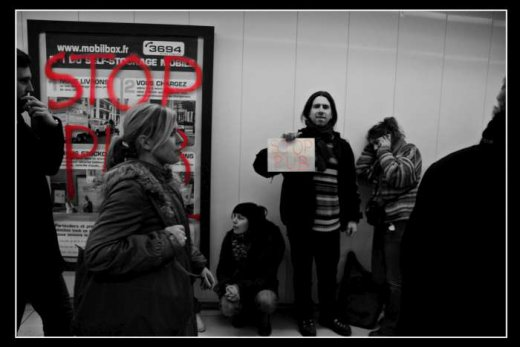
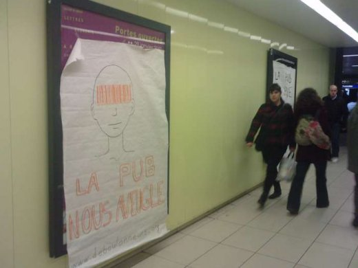

| |
Site dédié à la publication d'informations communiquées par le Collectif des déboulonneurs. En aucun cas ce site n'appelle à des actions illégales. | |
 |
||
|
Accueil du site > Lille > Action du Collectif des Déboulonneurs de Lille – 27 Janvier 2011

Résumé de l’action :Date : 27 janvier 2011 Heure de rendez-vous : 18 h 45 Lieu de rendez-vous : Place de la gare, devant la Grande Pharmacie Description de l’action : Barbouillage de 2 panneaux de 2 m² et nappage (scotchage) de panneaux muraux dans le couloir menant du hall d’entrée de la gare de Lille Flandres à la station de métro « Gares » par des nappes de papier pré-inscrites, suivi du barbouillage/nappage de 2 autres sucettes rue Faidherbe. Nombre de barbouilleurs : 4 (Aless, Maxime, Xavier et Anne-Laure) Nombre de participants à l’action : une cinquantaine Rôles :
Nombre (approximatif) de passants ayant assisté aux évènements : flux assez important dans le couloir souterrain, quasiment personne à l’air libre. Taille des panneaux publicitaires : 2 m² Inscriptions portées sur les nappes ou les panneaux (sur lesquels fut systématiquement apposé www.deboulonneurs.org, le plus souvent accompagnés d’un dessin) :
Présence de la police : 2 policiers et quelques militaires, étonnamment peu nombreux et peu vindicatifs (plan vigipirate, etc) Nombre de journalistes présents : 2 journalistes (Nord Eclair, Voix du Nord) et un photographe (Voix du Nord) Retombées médias :

Compte-rendu détaillé :Pour cette action, le rendez-vous était fixé devant la Grande Pharmacie de la Place de la Gare à 18 h 45. C’était une action particulière dans la mesure où il s’agissait cette fois-ci de scotcher des nappes sur une vingtaine de panneaux publicitaires situés dans le couloir menant du hall d’entrée de la gare de Lille Flandres à la station de métro « Gares ». Les inscriptions portées sur ces nappes avaient été réalisées le dimanche précédent le jour de l’action. C’était la première fois que le Collectif des Déboulonneurs de Lille réalisait une action dans un espace semi-public sécurisé par des vigiles. (*) Compte tenu du nombre de panneaux à recouvrir et de la présence de vigiles, de la police et des militaires, il a été demandé un taux de participation important pour cette action car le nappage de chaque panneau nécessite une présence conséquente. A 19 h nous étions une cinquantaine dont trois journalistes. Des nappes pré-scotchées ont été distribuées aux « nappeur-ses » avant l’action proprement dite pour accélérer le nappage dans le couloir du métro. Deux panneaux en carton au format 50 x 70 cm ont été réalisés pour informer les passants du motif de l’action (avec pour messages respectifs : « Action désobéissance civile non violente » et « Le barbouillage est une action de désobéissance civile non violente »). A 19 h le groupe s’est rendu dans le couloir du métro en un seul tenant. Les deux panneaux en carton avaient été tenus en main et placés aux extrémités du couloir tandis que des petits panneaux « STOP PUB » en format A4 étaient distribués à chaque membre du groupe. L’action « souterraine » s’est effectuée en moins d’une minute. Les nappes ont été scotchées simultanément sur les panneaux publicitaires du couloir, tandis que deux des panneaux furent barbouillés. A notre grande surprise (sans ironie), les forces de l’ordre ont mis un certain temps avant d’arriver sur les lieux. Deux policiers accompagnés de militaires ont interrogé Laetitia, de façon très cordiale, et il n’y a pas eu d’arrestation. La police n’a même pas remarqué les panneaux barbouillés, noyés parmi les nombreux panneaux nappés. Par souci de discrétion, il n’y a pas eu de chants, ni de distribution de tracts, mais les passants, très nombreux à cette heure de la journée, se sont dans l’ensemble montrés très intéressés par notre action. De nombreuses photos de l’action ont pu être prises par les participants du groupe (heureusement car nous avons appris très vite par SMS que les nappes de papier avaient été enlevées par les vigiles dès notre sortie du couloir du métro). Après l’action « souterraine », nous avons fini par une action classique rue Faidherbe avec le nappage et le barbouillage des deux panneaux publicitaires déroulants de 2 m² qui encadrent la rue Faidherbe. Sur le panneau le plus proche de la gare avait été scotchée la nappe portant le message « - de pub + de poésie » et barbouillé sur l’autre face les mots « On achète bien les cerveaux ». Nous déplorons l’absence de musiciens qui auraient ré-enchanté cette grande rue déserte, mais ce n’est que partie remise ! A noter que lors de notre marche le long de la rue Faidherbe, des automobilistes nous ont encouragés en klaxonnant. Sur l’autre panneau déroulant il était inscrit sur la nappe « Cache-toi pôv’pub ! » et sur le panneau proprement dit un éloquent et très pédagogique « La pub, ça pue ! ». L’action s’est terminée au Café Citoyen avec des boissons bien méritées. * Cette action devait par ailleurs précéder celle du Collectif des Déboulonneurs de Paris prévue dans les couloirs du métro Parisien le 28 janvier 2011. |
|
Site utilisant SPIP - Hébergement Ouvaton
|